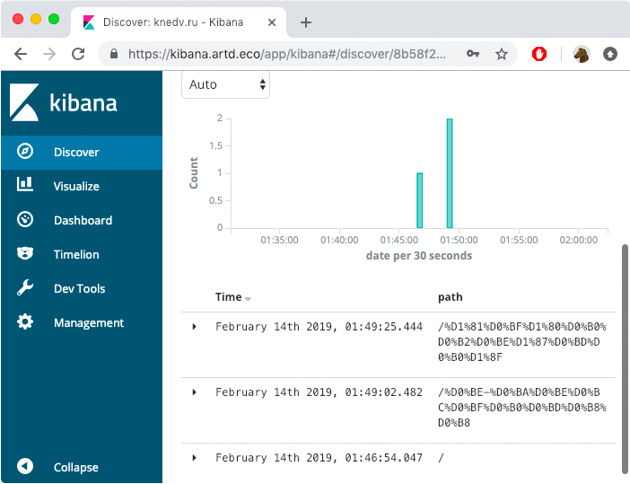
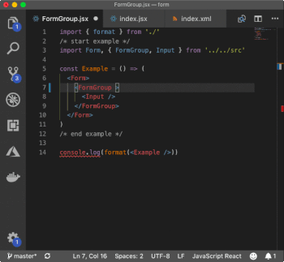
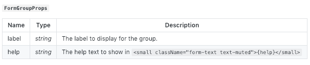

11-17 February
The job for this week is to finish work on Depack, document the frontend bundler part of it, and add the possibility to override Node.js builtin externs. The message about it can then be spread on the Google Closure Compiler group and Medium. After that, Zoroaster can be modified to have persistent contexts and test frontend Preact packages that I have and will make (router and form). On the 15th, the call for papers for JSCamp in Barcelona opens, so I will apply to that with the story about Depack and Frontend, which could hopefully be useful to others.
13 Wednesday
On Wednesday, I started by adding two badges to the website, the NPMBadge and GitHub badge, which were implmeneted as components. There was also a SelfBadge which would read information from the package.json of the package for which the website is made with Splendid and display the correct information there.

I then worked more on Splendid to enable correct AJAX behaviour when a page is mounted not on the root of the domain, e.g., https://dpck.github.io/form/. It required an update the the frontend ajax-loader.js script, which would receive the root property from the Splendid config, and load the page from there. Otherwise, webpages were attempted to always load from the root which GitHub pages does not allow. An update to the Splendid core was also required to tell the development server to serve files from the specified mount point.
Finally, I've finished documenting the logarithm software and published it on the NPM. The middleware allows to log each request's information into ElasticSearch. It was also compiled with Depack to ensure to install only dependencies for the API version of the package. I then enabled Logarithm on the knedv.ru website, and I could see the visitors to the developments server (i.e., me) in the Kibana dashboard.

Logarithm Middleware sends data about requests to the ElasticSearch. The portal is implemented as patched OSS Kibana with authentication.

12 Tuesday
Today I worked on documentation of the Depack/Form package, and improved the formatting of HTML. The examples now also use the seeded random number generator that prevented updating of id values each time the documentation generator is run. I finished documenting every component and described writing custom components.
At night, during working on the website to close #1, I encountered the problem with the website generation where the demo would not re-render after AJAX navigation, because scripts dynamically added to the page via setting innerHTML on the container component do not execute. I went on to research the possible solutions and found the thread on StackOverflow describing how to solve the problem, by extracting the scripts using the regular expressions. The change had to be made to Splendid so that received scripts are executed. The adaptation to the original script was made to enable executing scripts with module type. The source maps for the AJAX library was also added to enable debugging, as well as source maps for the bundle Depack/Form compiled with Depack.
function stripAndExecuteScript(text) {
var scripts = ''
var modules = []
var cleaned = text.replace(/<script([^>]*)>([\s\S]*?)<\/script>/gi, function(m, tags, script){
if (/type="module"/.test(tags)) {
modules.push(script)
return
}
scripts += script + '\n'
return ''
})
modules.forEach(function(mod) {
makeScript(mod, true)
})
makeScript(scripts)
}
On the about page, the Depack/Form demo is loaded from the compiled bundle made with Depack, whereas The Modules Demo page on the website loads the source code via modules. It was made to show the possibility of executing the javascript source code via the native browser functionality in modern browsers. It helped to discover a use case of when one would need to collect all dependencies' source files into a single directory which can be served by a CDN for example.
ToDo
11 Monday
On Monday, I worked on filling in the static-analysis package with the code from Depack, so that when I took it out of Depack, the latter looked much neater because it focused on packing the code together rather than performing the static analysis tasks. I also documented the new package so that I can visually see what it generates by automatically embedding examples. This new package was also needed for the bundle part of Depack to discover dependencies in node_modules . The task was complete successfully and I was able to integrate @depack/bundle into Depack and compile the knedv.ru Preact website. Additionally, I released the change to ÀLaMode that was required to build JSX modules to prepare them for Depack bundling, since it was decided that external modules would have to provide already compiled JSX code to simplify the process.
I then worked more on documentation of the Form package for Depack and included the types notations as well as examples. I found the way to provide JSDoc IntelliSense suggestions for the VSCode for components written as classes, which I struggled with before. It's a workaround that requires an extra meaningless line to the code, but it is worth the result that it produces. For example, to document the FormGroup component, I would have to add the this.props = this.props assignment annotated with the type:
/**
* The div with `form-group` class to hold the label, input, help and validation message.
*/
export class FormGroup extends Component {
constructor() {
super()
this.id = `i${Math.floor(Math.random() * 100000)}`
this.hid = `h${this.id}`
/**
* @type {FormGroupProps}
*/
this.props = this.props
}
/* ... methods */
}
The props can then also be used in the documentation by simply calling %TYPEDEF types/index.xml FormGroupProps% which Documentary understands. This help to discover the bug which I then fixed in Documentary when types tables referenced by name after the first one were not inserted.

View Form documentation at https://github.com/dpck/form
Towards the end of the day, I spent some time on writing an HTML formatter, because after I removed passing new lines as strings to the JSX pragma (see previous week), the preact-render-to-string package started to render the code without indentations which was hard to read and not suitable for the documentation. Therefore, I made a simple at-first function that split tags at >< point and inserted new lines between them. It was then modified to account for opening and closing tags, as well as if the tag is a textarea element which means there cannot be any new lines. I then had a neat function which also indented attributes after the line width became too large, and presented all example HTML output of the Form component in a nice way:
<form>
<div class="form-group">
<label htmlFor="i90435">
Input
</label>
<input name="input" class="form-control" value="hello-world" type="text"
aria-describedby="hi90435" id="i90435" />
<small id="hi90435" class="form-text text-muted">
Type in something...
</small>
</div>
<div class="form-group">
<label htmlFor="i12194">
Select
</label>
<select name="select" value="2" class="custom-select" id="i12194"
aria-describedby="hi12194">
<option>
</option>
<option value="1">
Free will
</option>
<option value="2" selected="true">
Unfree will
</option>
</select>
<small id="hi12194" class="form-text text-muted">
Please select...
</small>
</div>
<div class="form-group">
<label htmlFor="i51376">
TextArea
</label>
<textarea name="textarea" aria-describedby="hi51376" class="form-control" id="i51376" rows="3">One must still have chaos in oneself to be able to give birth to a dancing star.</textarea>
<small id="hi51376" class="form-text text-muted">
Multiple row input...
</small>
</div>
</form>TODO
- Make the html formatter a separate package.
- Unit test rendering of components with preact-render-to-string first before writing acceptance tests for the browser. rexml package can be used here, however it would not be able to extract multiple elements of the same kind in a parent.
- Add an article on Medium about how to add JSDoc for Preact class components without using TypeScript.